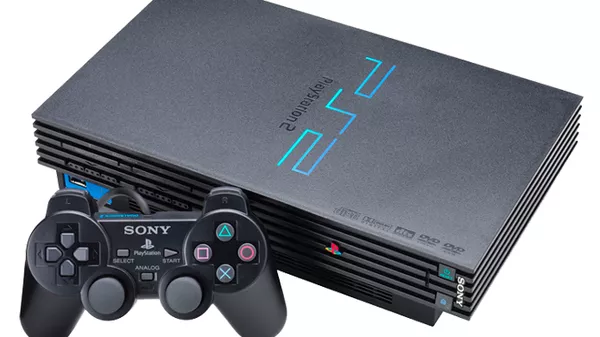

Nome da lojinha
| Foto | Descrição | Preço (R$) | Quantidade disponível |
|---|---|---|---|
|
O PlayStation 5 oferece novas possibilidades de jogabilidade, as quais você nunca imaginou. | 5.000 R$ | 5 |
| Mais leve e mais fino, o sistema PlayStation 4 tem disco rígido de 1 TB para tudo o que há de melhor em jogos | 2.800 R$ | 5 | |
| /> | O PlayStation 3 é um console muito popular que foi desenvolvido pela Sony. O videogame possui três versões: o PS3, o PS3 Slim e o PS3 Super Slim. | 1,500 R$ | 3 |
|  | O PS2 é o console de videogame mais vendido de todos os tempos. | 450,00 R$ | 10 |
|
Em julho de 2000, uma versão melhorada e mais fina chamada de PS One foi lançada, substituindo o console cinza original e nomeado apropriadamente para evitar confusão com seu sucessor, o PlayStation 2. | 120,00 R$ | 85 |